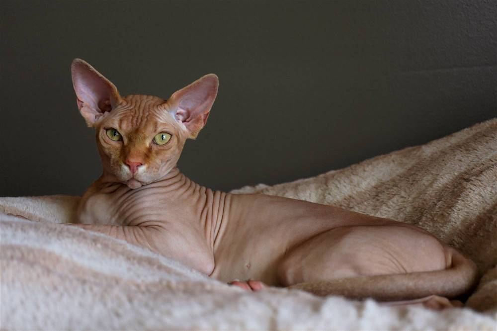

El gato esfinge es una raza sin pelaje, conocida por su carácter amigable y su apariencia única, fruto de una mutación genética natural. Aunque parece calvo, tiene una fina pelusa tipo gamuza, arrugas, orejas grandes y es conocido por ser extremadamente cariñoso, activo, inteligente y sociable.

El lobo siberiano es un animal salvaje adaptado a las bajas temperaturas, con un pelaje grueso que le permite sobrevivir en ambientes extremos. Es muy inteligente y organizado, ya que vive en manadas donde cada miembro cumple un rol. Se destaca por su resistencia, su agilidad y su capacidad para trabajar en equipo durante la caza.

El tigre es un animal salvaje fuerte y elegante, con gran capacidad de caza. Sus rayas lo ayudan a camuflarse en su entorno, y su fuerza y rapidez lo convierten en un depredador muy efectivo.